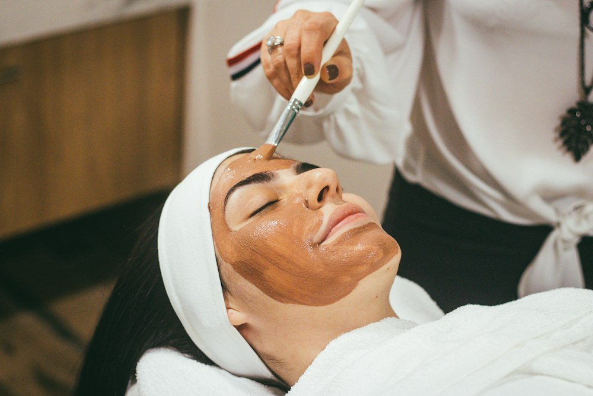
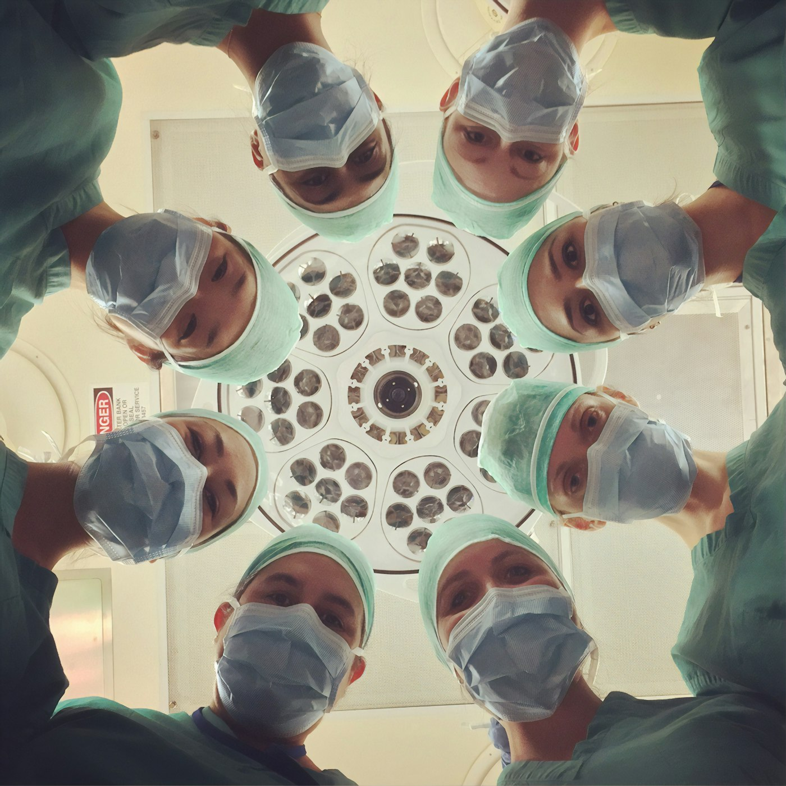
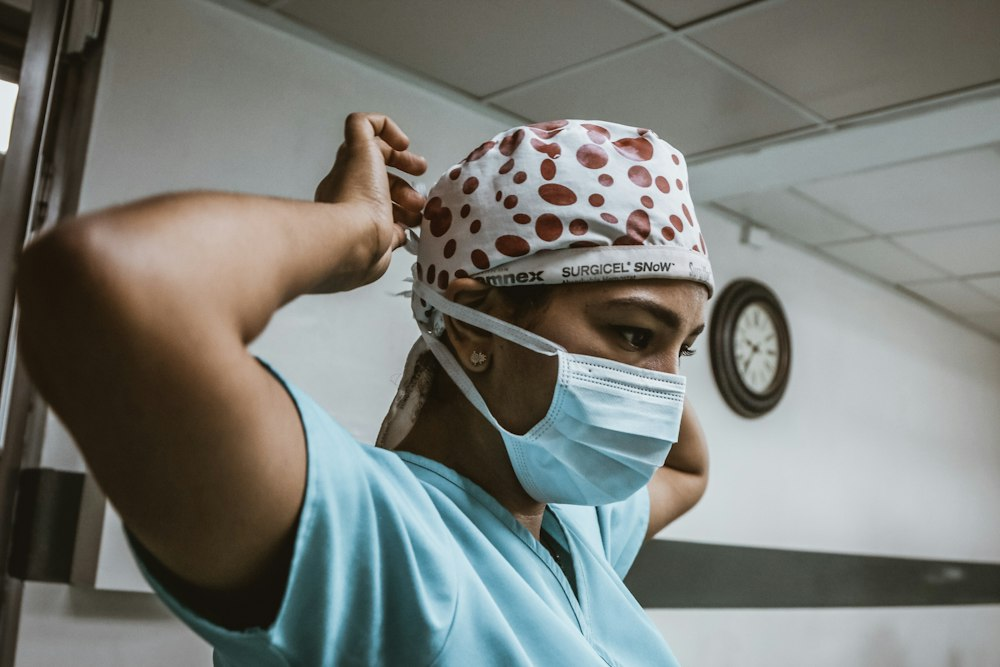
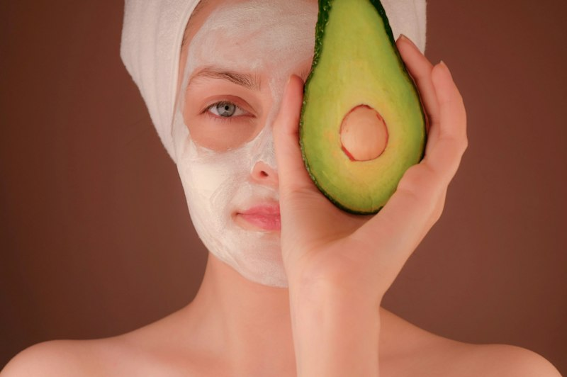
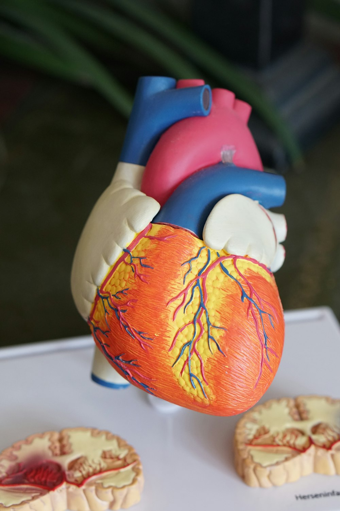

Tabiiylik
Natija yuz uyg'unligini buzmasligi va boshqalarga "jarrohlik izi" sifatida ko'rinmasligi kerak.
Plastik jarroh · Yuz-jag' jarrohi · Toshkent
Otoplastika, blefaroplastika va yuz-jag' jarrohligi. Ortiqcha va'dalarsiz, tabiiy natija va har bir bemorga individual yondashuv.

Yondashuv
Natija yuz uyg'unligini buzmasligi va boshqalarga "jarrohlik izi" sifatida ko'rinmasligi kerak.
Har bir qaror ko'rik, ochiq suhbat va holatni baholashdan keyin qabul qilinadi.
Standart "shablon" yo'q: reja sizning yuzingiz, yoshingiz va maqsadingizga moslanadi.
Muolajalar
Quloq shaklini tabiiy va estetik ko'rinishga keltirish
Turtib chiqqan yoki shakli nomutanosib quloqlarni tuzatadigan jarrohlik. Maqsad: quloq qorinishini tabiiy va simmetrik qilish hamda yuz bilan uyg'un ko'rinish yaratish.

02Ko'z atrofini yoshartirish, charchoq va ortiqcha teridan xalos bo'lish
Qovoqlardagi ortiqcha teri va "qop"larni olib tashlaydigan, ko'z atrofiga yangi va dam olgan ko'rinish beradigan jarrohlik.

03Yuz va jag' sohasi bo'yicha jarrohlik konsultatsiyasi
Dr. Xushvaqtov plastik jarroh va yuz-jag' jarrohi sifatida ishlaydi. Yuz-jag' sohasidagi muammo bo'yicha ko'rik va maslahat uchun yozilishingiz mumkin.
Muolajaning aniq turi, usuli va muddati shifokor ko'rigidan so'ng belgilanadi. Har bir jarrohlikda xavf va kontrendikatsiyalar bo'lishi mumkin.
Sizni nima bezovta qilyapti?
Tiklanish
Umumiy ma'lumot (ochiq tibbiy manbalarga ko'ra). Individual muddat va tavsiyalarni operatsiya qilgan shifokor belgilaydi.
Jarayon
Qo'ng'iroq yoki Telegram orqali yozing, qulay vaqtni tanlaymiz.
Maqsadingizni tinglab, imkoniyatlar va xavflarni ochiq tushuntiramiz.
Tekshiruvlar va individual davolash rejasi kelishiladi.
Jarrohlik amaliyoti o'tkaziladi, kerakli ko'rsatmalar beriladi.
Tiklanish davrida kuzatuv va maslahat bilan yoningizdamiz.


Shifokor haqida
Plastik jarroh va yuz-jag' jarrohi. Blefaroplastika va otoplastika yo'nalishlarida ishlaydi. Shiori: "Sizning tabiiy go'zalligingiz va ishonchingiz uchun".



Namuna (illyustrativ) rasmlar.
Savollar
Ha, shifokorning o'z e'lonlarida "bepul konsultatsiya" taklif etiladi. Tafsilotlarni yozilayotganda aniqlashtiring.
Odatda jarrohlik og'riqsizlantirish ostida o'tadi, keyin yengil noqulaylik bo'lishi mumkin. Individual tavsiyalarni shifokor beradi.
Umumiy ma'lumotga ko'ra dastlabki tiklanish 1–2 hafta, to'liq tiklanish bir necha hafta oladi. Aniq muddat holatingizga bog'liq.
Maqsad aynan tabiiy va xavfsiz natija. Qanday natija realistik ekanini konsultatsiyada shifokor ko'rsatib beradi.
Quloq shakllanib bo'lgach, odatda bolalarda ham o'tkaziladi. Yosh bo'yicha qaror shifokor tomonidan qabul qilinadi.
+998 90 002 50 06 raqamiga qo'ng'iroq qiling yoki Telegram: @dr_xushvaqtov1 orqali yozing.
Bepul konsultatsiya
Ma'lumotlaringizni qoldiring: Telegram orqali shifokorga tayyor xabar yuboriladi.